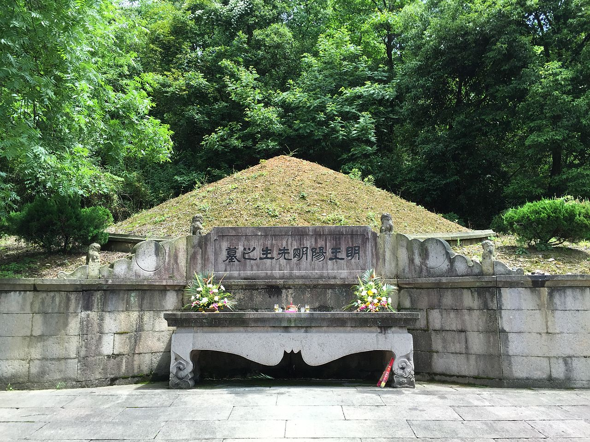

PHONG THỦY tốt nhất của đời người, không nằm ở chỗ chọn được địa thế tốt, không phải chỉ là sắp xếp đồ vật sao cho hợp lý, mà có một thứ còn quan trọng hơn rất nhiều…

Theo nghĩa đen, “phong” là gió, “thuỷ” là nước. “Phong thuỷ” là một học
thuyết có nguồn gốc từ thời cổ đại, chuyên nghiên cứu sự ảnh hưởng của hướng gió, hướng khí, mạch nước đến
vận mệnh, phúc hoạ của đời người. Tuy nhiên câu chuyện dưới đây sẽ cho bạn một cái nhìn khác về phong thuỷ.
Thế đất phong thủy từ xấu biến thành tốt
Vương Dương Minh (1472 – 1529) tên thật là Vương Thủ Nhân, là một nhà chính trị, nhà triết học nổi tiếng của triều Minh. Triết học của Vương Dương Minh gọi là Dương Minh Tâm học, cho rằng Tâm là nguồn gốc của vạn sự vạn vật, chỉ có cứu trị nhân tâm mới có thể cứu vãn xã hội, mới có thể giải quyết những vấn đề hiện thực xã hội. Và “Tâm học” không phải thứ học vấn trên giấy mà là trí tuệ của thực tiễn.
Ông là mẫu người “văn võ song toàn”, một đời cống hiến biết bao công trạng cho đất nước. Vương Dương Minh, thời bình thì nghiên cứu triết học, đèn sách, dựng lập nên “Dương Minh phái” có ảnh hưởng lớn đến nhiều nước Á Đông, thời chiến thì thân hành dẫn binh dẹp loạn, dẹp thổ phỉ.
Những năm cuối đời, Dương Vương Minh có tự mình tìm được một miếng đất ở sơn trang Lan Đình Tiên Hà phía
ngoài thành Thiệu Hưng (Chiết Giang) để làm nơi an táng khi trăm tuổi. Miếng đất này ban đầu có vị trí không
đẹp. Trước núi có 2 con sông nhỏ giao nhau đã ăn mòn chân núi bên phải, khiến cho phần đất bên trong trở nên
quá hẹp.
Nhiều thầy phong thuỷ cho rằng đó là thế đất không tốt, nhiều lần khuyên Vương Dương Minh bỏ đi. Nhưng ông không đồng ý, nhất quyết chọn đó làm nơi an nghỉ cuối cùng. Chẳng bao lâu sau, một ông lão sống trên núi nằm mơ thấy một vị thần tiên thân mặc áo bào đỏ, lưng thắt đai ngọc, đứng ở trên sông nói: “Ta muốn trả lại đường cũ cho con sông này“.
Ngày hôm sau, mưa dông nổi lên, dòng nước tràn ra khiến con sông đổi hướng về bờ phía Nam. Phần đất mà Vương Dương Minh chọn bỗng dưng rộng thêm cả trăm dặm, trở thành một mảnh đất phong thủy cực tốt với thế lưng dựa đồi núi, tầm nhìn thoáng đãng. Mọi người thảy đều kinh ngạc, khen ngợi đức lớn của Vương Dương Minh có thể cảm động thần linh, thay đổi được thế đất phong thuỷ.
Sau khi Vương Dương Minh qua đời cũng có chuyện lạ phát sinh. Trên đường bình định phản loạn trở về, ông bất ngờ qua đời ở Lâm An, Giang Tây. Người dân ven đường vây quanh linh cữu khóc lóc, đưa tiễn bậc đại nho. Đến Nam Xương, phải đi đường thuỷ về Chiết Giang, gió ngược chiều thổi suốt mấy ngày liền, thuyền không sao đi nổi.
Người học trò tên là Triệu Uyên quỳ dập đầu trước linh cữu ông mà khấn rằng người thân và học trò ở Chiết
Giang đều đang chờ đợi phu tử về. Vừa khấn xong, gió cũng đảo chiều, trở thành gió Tây, thuyền căng buồm,
chỉ 6 ngày đã về đến Chiết Giang. Ai cũng cảm thán đại đức của Vương Dương Minh có thể cảm động trời đất cả
lúc sống lẫn khi đã qua đời.

PHONG THỦY không lợi hại bằng thiện tâm
Một thầy phong thủy đi qua một chặng đường rất dài, vô cùng khát nước. Cuối cùng trông thấy một trang viên,
ông vội vàng đi tới xin chén nước.
Một người hầu từ trong đi ra nói ông đợi ngoài cửa chờ mình đi lấy nước. Thầy phong thủy đợi thật lâu,
trong lòng không khỏi phàn nàn.
Cuối cùng, nước được đưa tới và đựng trong một chiếc bát. Ông đang định uống một miếng nước thật lớn, không
ngờ trên mặt nước rắc nhiều cám và còn rất nóng.
Thầy phong thủy tức giận, nghĩ rằng gia chủ này muốn hành hạ ông, tâm địa thật độc ác. Nhưng vì quá khát, ông chỉ có thể nén tức giận, vừa thổi cám gạo trôi đi, vừa làm cho nước nguội dần rồi uống từng chút một.
Sau khi uống xong, thầy phong thủy liền GIỚI THIỆU một mảnh đất có phong thủy xấu cho gia đình đó nhằm trả thù.
Một vài năm sau, thầy phong thủy lại đi qua trang viên này. Điều ông không ngờ chính là ở đây phong cảnh tươi đẹp, càng thêm thịnh vượng, một mảnh đất cát tường.
Thầy phong thủy cảm thấy bối rối, yêu cầu được gặp chủ nhân để cho biết chuyện bát nước trước kia và tìm
hiểu về phong thủy ở đây.
Chủ nhân là một bà lão. Sau khi lắng nghe, bà mỉm cười và nói: “Trong phạm vi mấy km ở vùng này không có người, người đi đến đây nhất định phải đi rất xa, lập tức uống nước có hại đối với cơ thể. Cho anh chờ một lúc là vì để hơi thở của anh ổn định lại. Nước lạnh càng làm tổn hại thân thể, do đó thay bằng nước sôi, cho thêm cám là hy vọng anh uống chậm rãi, uống một miếng nước lớn có hại đối với cơ thể…”
Thầy phong thủy nghe xong hết sức xấu hổ. Từ đó về sau, ông đã từ bỏ các loại phong thủy, chuyên chú tu hành bản thân. Bởi vì cuối cùng ông đã hiểu rằng tốt hơn phong thủy rất nhiều chính là thiện tâm, cao hơn phép thuật chính là nhân quả.
PHONG THỦY lớn nhất đời người chính là thiện tâm
Người xưa nói: “Tâm còn chưa thiện, phong thủy vô ích. Bất hiếu cha mẹ, thờ cúng vô
ích“.
Qua 2 câu chuyện cho người ta thấy rõ rằng phong thuỷ hoàn toàn phụ thuộc vào phúc đức của người ta chứ không phải chỉ là địa thế. Muốn có được phong thuỷ tốt, trước tiên phải biết tu dưỡng đạo đức. Phong thuỷ cũng giống như luật nhân quả, kẻ chuyên làm điều ác dù ở nơi có phong thuỷ tuyệt vời cũng hoá thành hiểm địa, người tốt dù phải sống ở vùng đất hung cũng lại gặp dữ hoá lành. Dưỡng phong thuỷ chi bằng dưỡng phúc đức, mải mê tìm ngôi đất quý cả đời chi bằng một đời hành thiện.
Trong lý thuyết phong thuỷ, người ta hay nói về một trạng thái gọi là “tụ quang”, hội tụ ánh sáng. Phàm những người luôn ôm giữ lòng vị tha, luôn biết nghĩ đến người khác thay vì giành phần hơn cho mình thì mới có thể “tụ quang”. Biểu hiện trên gương mặt của “tụ quang” chính là nụ cười. Một nụ cười mãn nguyện, toả sáng có thể sưởi ấm cả một mùa đông giá lạnh. Miệng cười như hoa cũng chính là tướng mạo của người có phúc đức.
Trái lại, khi thường xuyên nghĩ điều ác, làm chuyện xấu, trong lòng chất chứa đầy tâm oán hận, đố kỵ, ích kỷ thì người ta sẽ rơi vào trạng thái “tụ âm”. Âm khí tất nhiên là không tốt, là những loại vật chất bất hảo. Khí âm sẽ khiến gương mặt xám xịt, không còn sinh khí. Những người này cả một đời chắc chắn sẽ không thể gặp may mắn.
Cái gốc làm người là Chân – Thiện – Nhẫn. Chân thành sống giữa đời bằng một trái tim đầy ắp thiện tâm và lòng kiên nhẫn cao cả, chắc chắn bạn sẽ nhận được phúc báo còn hơn cả tìm thấy đất có long mạch. Luôn chú trọng bồi dưỡng đạo đức, tu thân, tích đức, bạn sẽ có một loại phong thuỷ tốt nhất luôn mang theo bên mình vừa bảo vệ bản thân, vừa cải biến hoàn cảnh xung quanh. Đó mới thực là cái gốc của phong thuỷ đời người vậy.
.jpg)